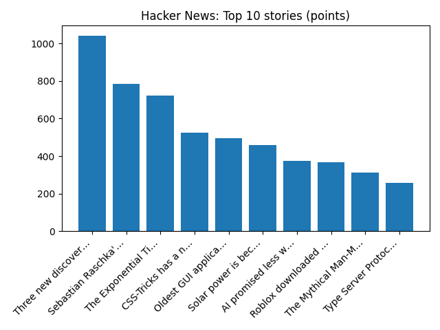

Truce begins in Ukraine city where residents ate weeds to survive
BBC — World
YOUR DAILY INTELLIGENCE BRIEF · 2026-10-27
Global watch: Truce begins in Ukraine city where residents ate weeds to survive, Minimum wage set to rise but 18-20 year-olds will not get bigger increase.
Northern Virginia: 'His Business Was People': Tributes Pour In For Beloved Virginia Businessman Jared Snow - DailyVoice.com, Henrico County remains under a drought watch advisory after Virginia environmental officials reviewed conditions across the state this month. A drought watch is intended to alert state and local officials and the public to developing conditions. Full story: https:// - Instagram.

Global coverage includes Truce begins in Ukraine city where residents ate weeds to survive; Minimum wage set to rise but 18-20 year-olds will not get bigger increase; Boeing will not reach 737 production target until early 2027 - Reuters. Local coverage includes 'His Business Was People': Tributes Pour In For Beloved Virginia Businessman Jared Snow - DailyVoice.com; Henrico County remains under a drought watch advisory after Virginia environmental officials reviewed conditions across the state this month. A drought watch is intended to alert state and local officials and the public to developing conditions. Full story: https:// - Instagram.

Maria Pope
Maria Pope may refer to:
Maria Ann Campion (1775–1803), Irish actress and second wife of actor Alexander Pope Maria Sophia Pope (1818–1909), New Zealand shopkeeper and businesswoman https://en.wikipedia.org/wiki/Maria_Pope
Noctilucent Clouds over Sweden
Runs so far today: 2